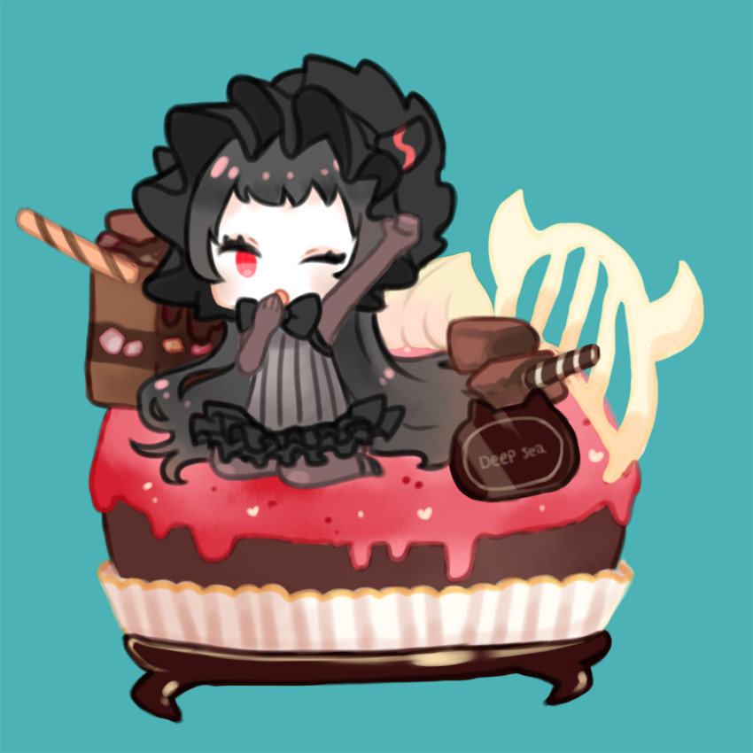
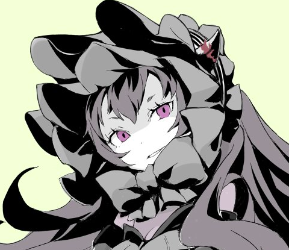

離島棲鬼
Beta Relea͖̒̂ͅse 1.0, single letter generator.
Copy, Paste, Delete and reset お願いします。Use hold keys.

By Johnjimy Som - Ritousei-ki Oni © 2017

離島棲鬼 - O SHT, DAT MI.
泊地水鬼 - "リトウセイキ鬼" a r t b y k o b o n e.
航空母艦ヲ級 - ヲ...
北方棲姫 - Y U NO MAKE IT FOR HOPPO.